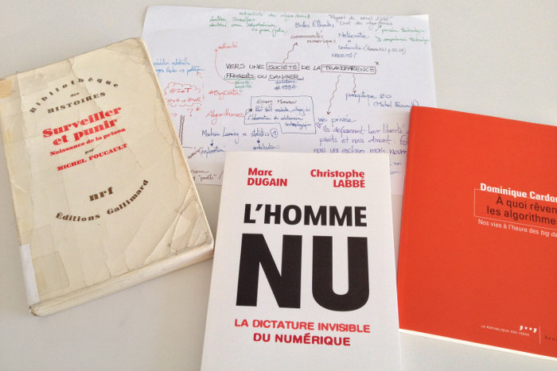
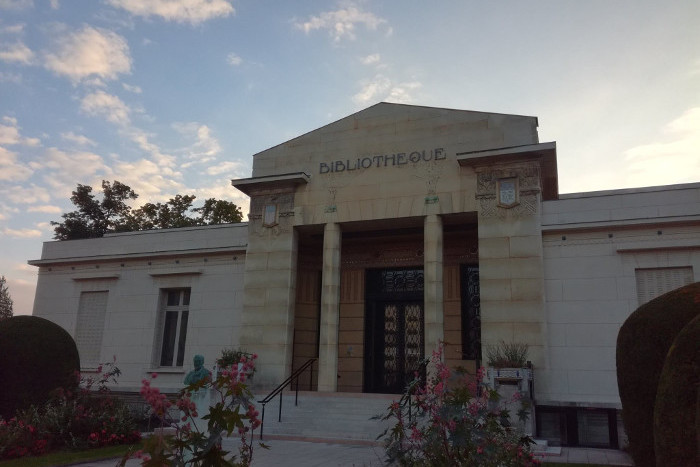
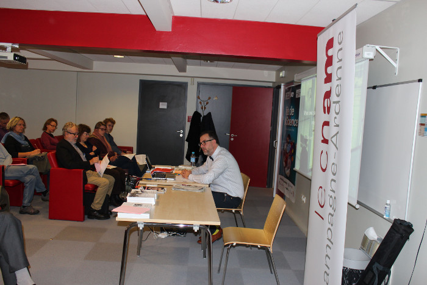
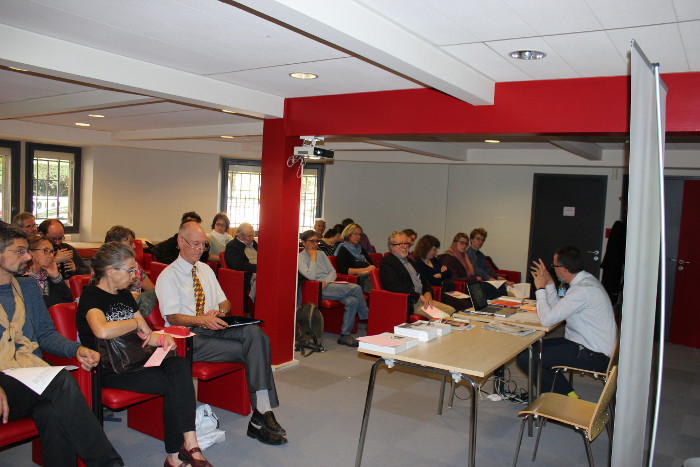
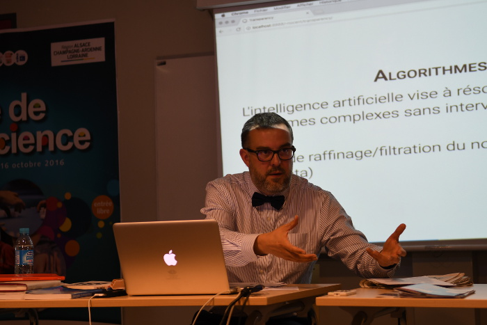
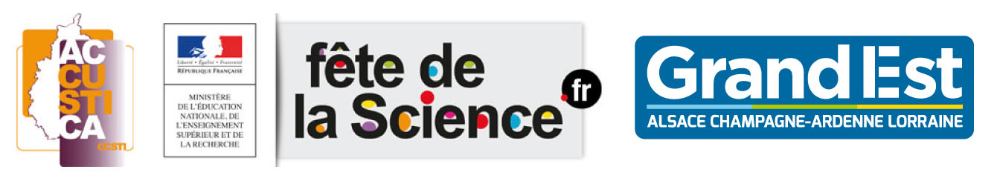

Conférence du CNAM
samedi 8 Octobre 2016 à 15h
bibliothèque Carnegie, Reims
À l'heure des objets connectés et des Big Data, la notion même de vie privée est questionnée tant nos données personnelles sont exposées sur le réseau internet. Qu'il s'agisse de nos relations professionnelles ou intimes, de nos goûts ou préférences, voire de notre état de santé, ces données sont, avec notre consentement, exposées et partagées. Faut-il s'inquiéter de l'avènement de ce modèle panoptique 2.0 où la surveillance est présentée comme un gage d'amélioration de notre existence ? Après un rapide tour d'horizon des outils numériques qui nous entourent, nous explorerons les évolutions potentielles de ces systèmes et leurs conséquences sur la société civile.
Enregistrement sonore
Vous pouvez simultanément consulter la présentation projetée lors de la conférence en cliquant sur les flèches bleues.
Bibliographie
Republic.com
de Cass R. Sunstein, Princeton University Press 2001
The singularity is near: When humans transcend biology
de Ray Kurzweil, Penguin
Books 2005
Everyware: The dawning age of ubiquitous computing
d’Adam Greenfield, New Riders
2006
Les nétocrates
de Jan Soderqvist
et Alexander Bard, Editions Léo Scheer 2008
Shallows: How the Internet Is Changing the Way We Think, Read and Remember
de
Nicholas Carr, Main 2011
The Filter Bubble: What the Internet Is Hiding from You
de Eli Pariser, The
Penguin Press HC 2012
L'humanité augmentée : L'administration numérique du monde
d’Éric Sadin,
Éditions L'échappée 2013
The Circle
de Dave Eggers, Vintage 2014
La vie algorithmique : Critique de la raison numérique
d’Éric Sadin, Éditions
L'échappée 2015
A quoi rêvent les algorithmes : Nos vies à l'heure des big data
de Dominique
Cardon, Seuil collection La république des idées 2015
L’Homme nu : La dictature invisible du numérique
de Marc Dugain et Christophe
Labbé, Plon 2016
Galerie
    
Questions ouvertes
Une sélection de questions posées à l'issue de la présentation.
- Tous ces objets connectés semblent nocifs pour la santé ? Est-ce démontré ?
- Les big data peuvent-ils accélérer la robotisation de la société ?
- La technologie entraîne-t-elle une perte d'autonomie ainsi qu'une déresponsabilisation ?
- L'excès d'information ne tue-t-il pas l'information ?
Quizz
Histoire de tester vos connaissances, vous pouvez essayer de répondre à ces quelques questions en lien avec cette conférence
- Qu'est-ce qu'un algorithme ?
- Qui sont les GAFA ?
- Quelle est la différence fondamentale entre systèmes experts et réseaux bayesiens ?
- Combien de fois ai-je utilisé le mot frappant ?
La Fête de la Science est une Manifestation initiée par le Ministère de l’Education Nationale, de
l’Enseignement Supérieur et de la Recherche, cofinancée par le Conseil Régional Grand Est, avec la
participation des Conseils Départementaux de la
Marne et des Ardennes. La coordination Champagne-Ardenne est assurée par ACCUSTICA.
